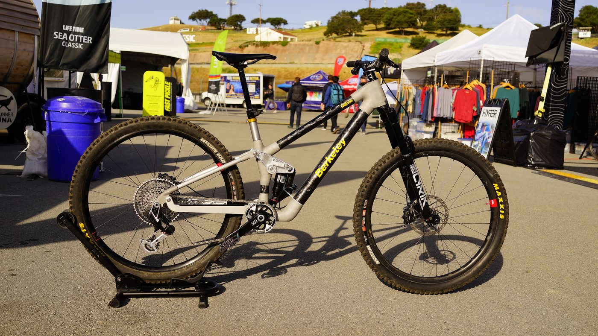
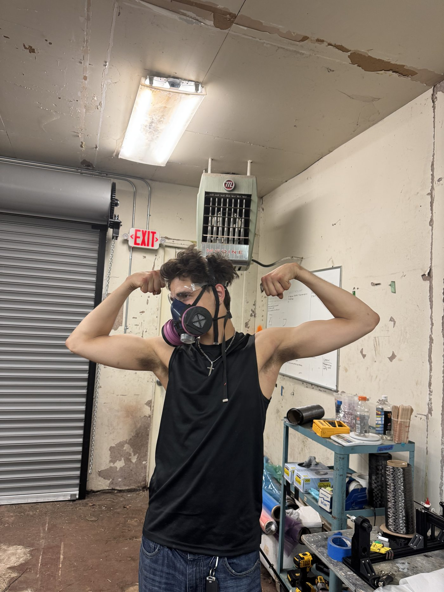
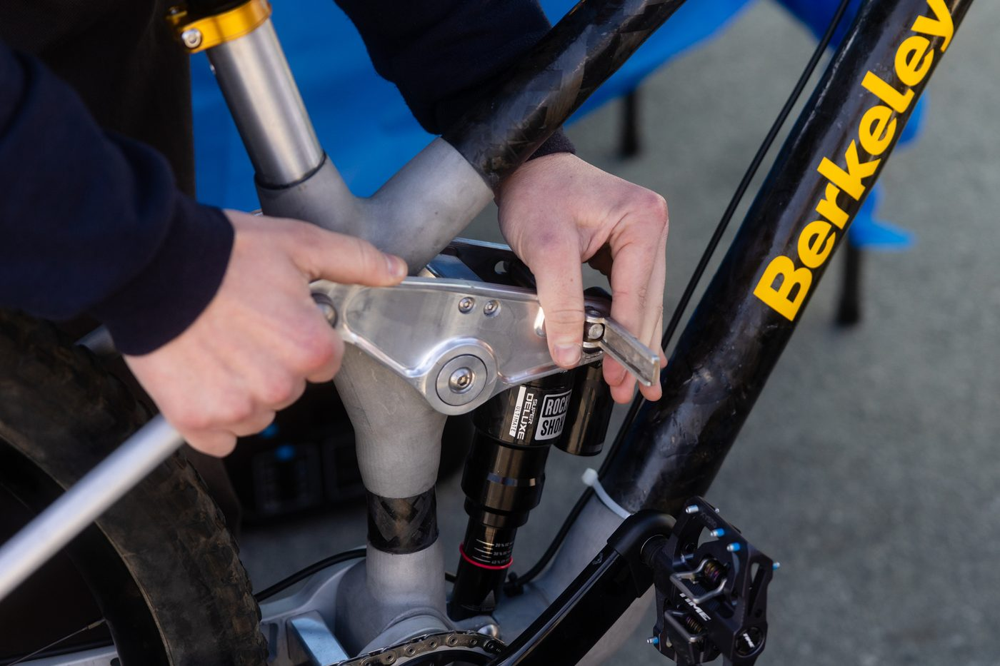
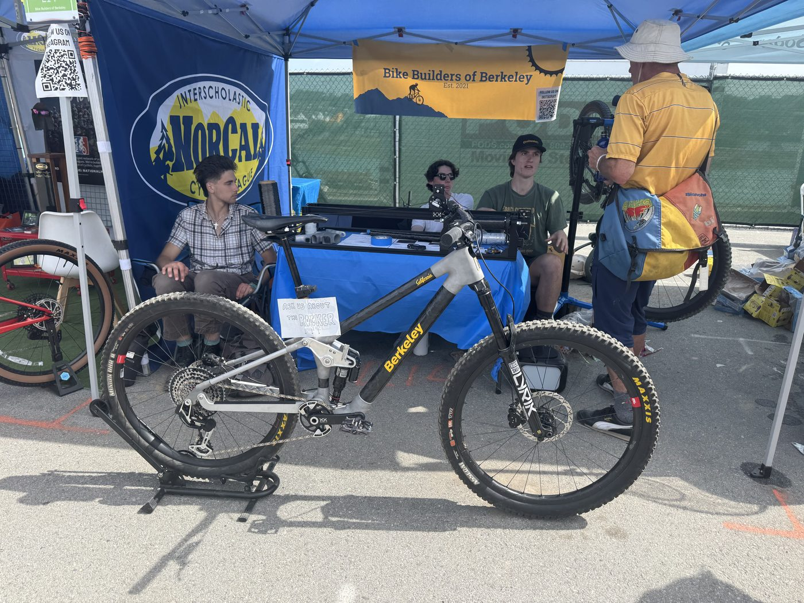
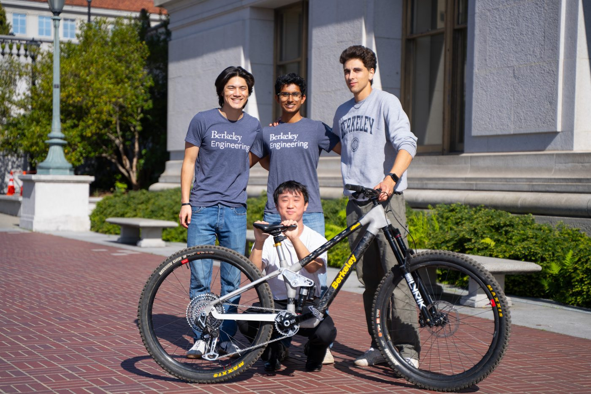
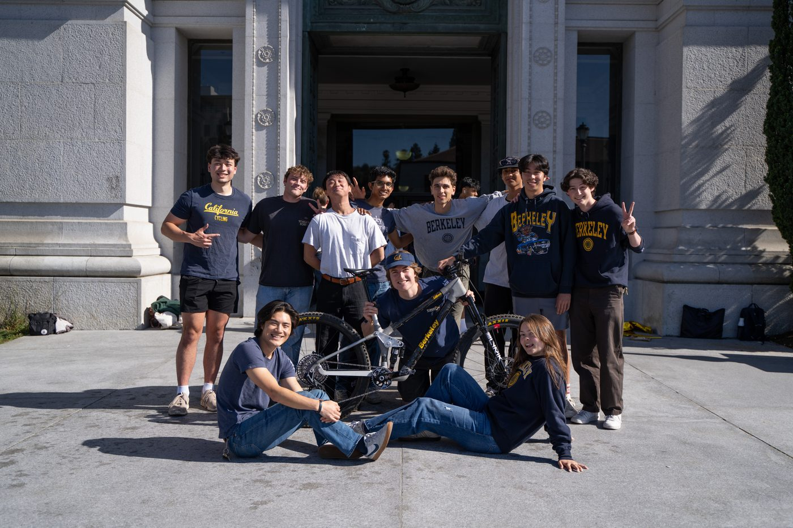

Modal Trail Bike
2026
- Built a full-suspension carbon fiber trail bike with Bike Builders of Berkeley.
- Manufactured the frame's CFRP tubes in house on a custom filament winder.
- Designed around a two-position rocker that gives the bike two distinct ride setups.
Collaborators

Overview
Built with Bike Builders of Berkeley, the Modal Trail Bike is a fully custom full-suspension carbon fiber trail bike. I actually came up with the name: "modal" because the bike has distinct modes, thanks to a two-position rocker that lets it switch between two very different suspension setups, essentially two bikes in one frame. Like our other frames, it is built from carbon fiber (CFRP) tubes bonded to machined metal lugs, a hybrid approach that pairs the exceptional stiffness-to-weight of carbon with the complex geometry and suspension hardpoints that are far easier to achieve in metal. Rather than buy off-the-shelf tubing, we manufactured every carbon tube in house on tooling we designed and built ourselves. On the team, I focused on the carbon fiber, manufacturing the frame's tubes and helping bond them into the finished frame.
Composites and manufacturing
I manufactured the frame's CFRP tubes using the custom filament winder and post-processing system our team designed and built (see the Carbon Fiber Filament Winder project). Each tube starts as continuous carbon tow, wet out with epoxy and wound under controlled tension onto a sectioned mandrel that defines its inner shape. Once wound, the tube is vacuum bagged and cured, then post-processed to compact the laminate, drive out excess resin, and leave a clean structural surface. Building the tubes ourselves let us tune the fiber orientation and resin content for the loads each part of the frame would see, and produce shapes that are not available as stock tubing.
 Winding carbon fiber tow onto a mandrel
Winding carbon fiber tow onto a mandrel
 Mandrel ready to wind
Mandrel ready to wind
 Vacuum bag processing
Vacuum bag processing
 Cured tubes fitted to the frame
Cured tubes fitted to the frame
 Finished carbon tubes
Finished carbon tubes
The two-position rocker
The bike's standout feature is its two-position rocker, the linkage that connects the rear suspension to the shock. It can be mounted in two positions, and each one gives the bike a genuinely different character: one setup is steeper and more efficient for climbing and mellower trails, while the other slackens the geometry and opens up the travel for steep, aggressive descending. It effectively gives you two bikes in one. Because switching between them is a deliberate change rather than a set-and-forget compromise, each mode stays fully committed to its job, so the difference in how the bike rides is dramatic.
 
Results
With the tubes wound, finished, and bonded to the lugs, we assembled everything into a complete, rideable trail bike and brought it out to show, including at the Sea Otter Classic. Watching the carbon parts I manufactured come together into a working bike, from raw carbon tow to a frame you can actually ride, was the most rewarding part of the project, and it gave the whole team real hardware to test, ride, and keep improving.
 